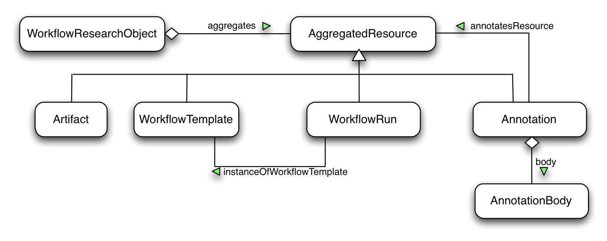

This document is to provide an accessible introduction to the Wf4Ever RO Model so that readers can understand "what" the RO Model provides and "how" the RO Ontologies and Vocabularies can be used to describe an aggregation object in a structured format.
Research Objects are semantically rich aggregations of resources that bring together data, methods and people in scientific investigations [[BECHHOFER11]]. Their goal is to create a class of artifacts that can encapsulate our digital knowledge and provide a mechanism for sharing and discovering assets of reusable research and scientific knowledge.
In the Wf4Ever project the focus is on those Research Objets whose methods are implemented as scientific workflows. A (workflow-centric) research object (RO) is an artifact that bundles one or several workflows, the provenance of the results obtained by their enactment, other digital objects that are relevant for the experiment (papers, datasets, etc.), and annotations that semantically describe all these objects. A model that can be used to describe workflow-centric research objects is hence proposed in Wf4Ever [[RO-MODEL]]. This model is implemented as a suite of lightweight ontologies or vocabularies, building upon existing work from related communities.
This primer document aims at easing the adoption of the RO model by developers and techy-savvy experimental data publishers by providing:
The scope of this document is mainly that of developers interested in understanding how to use ontologies/vocabularies to describe research objects in order to build tool support for their management; and experimental data publishers with sufficient knowledge about Semantic Web technologies to publish their research resources as an aggregation object and describe them in a machine-understandable, structured format, using the Resource Description Framework (RDF). In this primer document the RDF Turtle syntax is used throughout. The normative specification of the research object ontologies and vocabularies can be found in [[RO-MODEL]].
The following namespaces are used in this document:
@prefix ro: http://purl.org/wf4ever/ro# @prefix wfdesc: http://purl.org/wf4ever/wfdesc# @prefix wfprov: http://purl.org/wf4ever/wfprov# @prefix dct: http://purl.org/dc/terms/ @prefix ore: http://www.openarchives.org/ore/ @prefix ao: http://purl.org/ao/ @base http://purl.org/wf4ever/ro-primer#
This section provides an overview of the RO Model. It does not cover all the details of the model. The RO Model Specification provides precise definitions to be used.
Generally speaking he Wf4Ever RO model can describe the following three aspects of information:
A Research Object is simply an aggregation of resources and annotations about them. The figure below provides an overview of the Wf4Ever RO Model, which includes the following constructs:

The description of a RO, such as its structure and annotations, is provided in a manifest file. This manifest file can be aggregated as part of this RO. Exmaples of descring a basic RO in a manifest file can be found in Section @@TODO.
A special class of research object that is the primary interest of our specification are workflow-centric research objects, which refer to research objects that aggregate workflows, or more specifically workflow templates. A workflow template is a network in which the nodes are processes and the edges represent data links that connect the output of a given process to the input of another process, specifying that the artifacts produced by the former are used to feed the latter. A process is used to describe a class of actions that when enacted give rise to process runs. Processes specify the software component (e.g., web service) responsible for undertaking those actions.
A workflow is often executed following a template which describes each step involved in the whole execution. Templates can be designed by scientists (users) with the purpose of being able to execute the same workflow many times with different inputs for their tests, as "live-tutorials" of how some data infrastructure can be more efficiently used, etc. There are two types of templates: abstract workflow templates have some of the steps of the workflow not bound to a specific tool, while concrete workflow templates have all the steps specified. In the RO model, we are able to describe these templates plus their relationships with the executions with the wfdesc vocabulary.
As well as workflow templates, workflow research objects contain information about workflow runs, which are obtained by enacting workflow templates, and provenance of the results produced as a result. Examples of describing a workflow research object can be found in Section @@TODO.
In the RO model the Annotation Ontology is used as a generic vocabulary to allow describing research objects, their resources, and their relationships. Three kinds of elements are used to specify annotations:
Annotations may be provided primarily for human consumption (e.g. a description of a hypothesis that is tested by a workflow-based experiment), or for machine consumption (e.g. a structured description of the provenance of results generated by a workflow run). Both kinds of annotations are accommodated using Annotation Onology structures. Examples of expressing annotations to an RO and its components can be found in Section @@TODO
The Wf4Ever RO model is implemented as a suite of three ontolgoies, which include:
The ro ontology: which provides basic structure for the description of aggregated resources and the annotations that are made on those resources.
The wfdesc ontology: which is vocabulary for the description of workflows. It is targeted at providing an abstraction that can be mapped to different particular workflow systems.
The wfprov ontology: which provides terms for describing provenance information about actual executions of workflows.
These ontologies were built upon existing vocabularies as much as possible, including OAI ORE (Object Exchange and Reuse) and the Annotation Ontology [[AO]].
The following sections show how this suite of RO ontologies can be used to describe a basic workflow-centric RO. A "Hello World" workflow RO is used as the running example to demonstrate how each part of the RO model can be used to describe this RO, its components and annotations to the RO as a whole and to each of its component.
The "Hello World" example RO, as shown in the following example RDF, aggregates a collection of resources, including the simple Hello World workflow template, its intermediate and final data results resulting from the run of this workflow, as well as annotations to this RO and its components.
<> a ro:ResearchObject, ore:Aggregation ;
ore:aggregates <helloworld.t2flow> ;
ore:aggregates <artifact/hello> ;
ore:aggregates <artifact/world> ;
ore:aggregates :ann1 ;
dct:created "2011-12-02T15:01:10Z"^^xsd:dateTime ;
dct:creator [ a foaf:Person; foaf:name "Stian Soiland-Reyes" ] .
<helloworld.t2flow> rdf:type ro:Resource .
<artifact/hello> rdf:type ro:Resource .
<artifact/world> rdf:type ro:Resource .
The Wf4Ever RO model is aimed to be a workflow-centric RO model. It provides specific constructs to describe information about workflows and their runs. For example, the above example can be revised and expressed more precisely using the wfdesc vocabulary that is part of the RO ontologies and can be used to describe the workflow template that is aggregated by a workflow-centric RO, and the wfprov vocabulary that can be used to describe provenance information about data results produced by workflow runs.
<> a ro:WorkflowResearchObject ;
ore:aggregates <helloworld.t2flow> ;
ore:aggregates <artifact/hello> ;
ore:aggregates <artifact/world> ;
ore:aggregates :ann1 ;
dct:created "2011-12-02T15:01:10Z"^^xsd:dateTime ;
dct:creator [ a foaf:Person; foaf:name "Stian Soiland-Reyes" ] .
<helloworld.t2flow> rdf:type wfdesc:Workflow .
<artifact/hello> rdf:type wfprov:Artifact .
<artifact/world> rdf:type wfprov:Artifact .
Structured annotations can be added to research objects, aggregated resources, or components of those resources. Annotations are declared as separate RDF resources, which should independently be aggregated as well. The Wf4Ever RO model uses Annotation Ontology 2.0 for describing the link between these RDF resources (the annotation body) and the resources they annotate (annotated resource), also providing an anchor point for describing who made the annotation and when.
Multiple annotation bodies (ao:body) can annotate the same resource (ao:annotatesResource), and a single annotation (ao:Annotation) can annotate multiple resources. Each annotation should have a dct:creator and dct:createdAt to specify who created the annotation when. Details about how to use the Annotation Ontology should refer to the above link.
Annotations on a research object can apply to the aggregation as a whole. This can for instance be its title, description, general classifications and relations to other research objects. For example, the following RDF shows how we can provide additional description about the HelloWorld research object. We keep these annotations in a separate resource, and we also provide provenance information about these annotations.
# http://www.example.com/ro1/manifest
@prefix ro: <http://purl.org/wf4ever/ro#> .
@prefix ore: <http://www.openarchives.org/ore/terms/> .
@prefix ao: <http://purl.org/ao/> .
@prefix dct: <http://purl.org/dc/terms/> .
<> a ro:ResearchObject, ore:Aggregation ;
ore:aggregates <helloworld.t2flow>, <stiansComments.ttl>, :ann1 ;
ore:isDescribedBy <manifest> .
:ann1 a ro:Annotation, ao:GraphAnnotation ;
ao:annotatesResource <> ; # The RO
ao:body <stiansComments.ttl> ;
dct:creator _:stian ;
dct:createdAt "2011-07-14T15:02:14Z"^^xsd:dateTime .
<helloworld.t2flow> a ro:Resource, ore:AggregatedResource .
<stiansComments.ttl> a ore:AggregatedResource .
The actual annotation body is stored in a separate resource, and can be made accessible via a URL like http://www.example.com/ro1/stiansComments.ttl.
# http://www.example.com/ro1/stiansComments.ttl.
<> dct:title "A lovely research object"@en ;
dct:description "An example of how I think ROs should look like"@en .
Annotations about a workflow should be kept in a separate resource. By separating these annotations in a separate file, they can be aggregated by an RO and provenance of these annotations can also be made, like who created them when. This is an important pattern that should be followed when creating RO annotations. These annotations can also be reused as long as they are universally true outside the context that they were initially created, i.e. the annotations about a workflow remains true no matter in which RO it could be aggregated.
Annotations are useful for typing and describing the resources that form a research object. And these annotations to a component of an RO, such as a workflow in this case, can be either globally true, i.e. remaining true independent of any specific RO, or locally true, i.e. within the context of a particular RO. Here we give two examples to show how both cases can be expressed.
# http://www.example.com/ro1/manifest
<> a ro:ResearchObject, ore:Aggregation ;
ore:aggregates <helloworld.t2flow>, <workflowMetadata.ttl>, :ann2 ;
ore:isDescribedBy <manifest> .
:ann2 a ro:Annotation, ao:GraphAnnotation ;
ao:annotatesResource <helloworld.t2flow> ;
ao:body <workflowMetadata.ttl> ;
dct:creator _:stian ;
dct:createdAt "2011-07-14T15:31:14Z"^^xsd:dateTime .
<helloworld.t2flow> a ro:Resource, ore:AggregatedResource, a ro:Workflow .
<workflowMetadata.ttl> a ore:AggregatedResource .
The same as the above example, the actual annotation body is stored in a separate resource, such as http://www.example.com/ro1/workflowMetadata.ttl, and can provide the following annotations about the workflow
### http://www.example.com/ro1/workflowMetadata.ttl
<helloworld.t2flow> a wfdesc:Workflow .
dct:description "Workflow for sequence analysis"@en .
#
This example will both establish that <helloworld.t2flow> actually is typed as a workflow (that was asserted by Stian), and give it a general description about the workflow. This information could for instance come from where originally the workflow was retrieved, such as the social workflow sharing web site myExperiment, or the workflow definition itself.
A second annotation gives the description of the workflow with respect to this HelloWorld research object - by annotating the workflow proxy instead of <helloworld.t2flow>. In OAI-ORE a Proxy allows users to make statemetns about an aggregated resource in the context of a particular aggegation (such as ro:ResearchObject). By adopting this construct it is possible to say, for instance, why the workflow exists within this research object - this annotation would not necessarily apply to the workflow aggregated in a different research object, although it may be retrieved anyway.
# http://www.example.com/ro1/manifest
# ...
<> ore:aggregates :ann3 ;
ore:aggregates <helloworld.t2flow>, <whyThisWorkflow.ttl>, :ann3 ;
ore:isDescribedBy <manifest> .
:workflowProxy a ore:Proxy ;
ore:proxyFor <helloworld.t2flow> ;
ore:proxyIn <> .
:ann3 a ro:Annotation, ao:GraphAnnotation ;
ao:annotatesResource :workflowProxy ;
ao:body <whyThisWorkflow.ttl> ;
dct:creator _:stian ;
dct:createdAt "2011-07-14T16:21:14Z"^^xsd:dateTime .
#
# http://www.example.com/ro1/whyThisWorkflow.ttl :workflowProxy dct:description "Best workflow I could find for now"@en; #
Note: It would be valid, but not required, to also include :ann3 ao:annotatesResource
Resources of an RO can also be annotated with relationships between them, by having an ro:Annotation with multiple ao:annotatesResource and relate them within a single annotation body. The wfprov ontology for instance will allow you to describe that a particular artifact was the output of a workflow run, which used a particular artifact as input.
### such as output of a workflow run
<output> ore:aggregatedBy <> .
<> a ro:ResearchObject ;
ore:aggregates <output>, <run_helloworld>, :ann2 .
:ann2 a ao:GraphAnnotation ;
ao:annotatesResource <output> ;
ao:annotatesResource <run_helloworld> ;
ao:body <output_annotations.ttl> .
### annotation to an output data
### <output_annotations.ttl> contains:
<output> dct:title "Output from an example workflow"@en;
foaf:topic go:ProteinSequence ;
wfprov:wasOutputFrom <run_helloworld> .
<run_helloworld> rdf:type wfprov:WorkflowRun ;
wfprov:usedInput <hello> ;
wfprov:usedInput <world> .
There are various types of provenance associated within an RO and its components, depending on the granularity we are dealing with: the provenance of the RO itself (e.g., its evolution, updates and modifications made to the main structure of the RO), the provenance of each of its components (e.g., the workflow template, papers or other sources aggregated in the RO, their evolution, etc.), or (at a lower granularity) the provenance of the workflow results.
This type of provenance can describe either simple attribution information about an RO or refer to the changes and evolution "suffered" by the RO from its creation to its current state. Attribution metadata of the RO, such as creator, or date of release, can be captured through annotations, as shown in section @@TODO.
During the evolution of an RO it can have several versions that refine the previous ones and may be on different states, being alive, archived, published, or etc. This information about the versioning of ROs and their evolution is currently being captured in a separate roevo ontology.
Workflows are one of the most important items in an RO aggregation. As happened with ROs, workflows can evolve, be updated and reused in different ROs. In the RO model, this kind of provenance is captured by annotations, as shown in Section @@TODO. In particular, we could extend the example shown in the aforementiones section to provide additional provenance metadata about the workflow <helloworld.t2flow>:
# http://www.example.com/ro1/workflowMetadata.ttl>
<helloworld.t2flow> a wfdesc:Workflow ;
dct:description "Workflow for sequence analysis"@en ;
dct:created "someDateGoesHere"^^xsd:dateTime ;
dct:creator _:stian ;
dct:version "2";
dct:replaces <helloworld0.1.t2flow> .
Additional provenance-related vocabularies can also be used by users, such the PAV vocabulary, or the ongoing standard PROV Ontology from the W3C Provenance Working Group.
The provenance of the workflow results refer to the record of some or all the actions that occurred during a workflow execution. The results can include inputs, intermediate results, generated outputs and how do they relate to each other, who activated it, in which system was it executed, when did the execution start and end, etc. It is modeled with the wfprov vocabulary.
The next example shows how an output of an experiment (<output>) was produced by a process run (<processrun-workflow>) that used a dataset (<input>) as input. <processrun-workflow> is the only process run taking place in the workflow execution <workflowrun-workflow>.
### annotation to an output data
### <output_annotations.ttl> contains:
<output> rdf:type wfprov:Artifact;
wfprov:wasOutputFrom <processrun-workflow> .
<input> rdf:type wfprov:Artifact, wf4ever:Dataset.
<processrun-workflow>
rdf:type wfprov:ProcessRun ;
wfprov:usedInput <input>;
wfprov:wasPartOfWorkflowRun <workflowrun-workflow> .
<workflowrun-workflow>
rdf:type wfprov:WorkflowRun .
Workflow description
A workflow is often executed following a template which describes each step involved in the whole execution. Templates can be designed by scientists (users) with the purpose of being able to execute the same workflow many times with different inputs for their tests, as "live-tutorials" of how some data infrastructure can be more efficiently used, etc. There are two types of templates: abstract workflow templates have some of the steps of the workflow not bound to a specific tool, while concrete workflow templates have all the steps specified. In the RO model, we are able to describe these templates plus their relationships with the executions with the wfdesc vocabulary
Following the example presented in the previous section, now we want to link the executed process to the correspondant step in the template (<templProcess>), since it may contain additional information about how to proceed in order to reproduce it. In the next example, we highlight the triples added to make such a connection.
### annotation to a process that generated the output data
### contained in <output_annotations.ttl>:
<processrun-workflow>
rdf:type wfprov:ProcessRun ;
wfprov:usedInput <input>;
wfprov:wasPartOfWorkflowRun <workflowrun-workflow> ;
wfprov: describedByProcess <templProcess>.
<templProcess> a wfdesc:Process;
wfdesc:hasInput <i1>;
wfdesc:hasOutput <o1>.
Now we also link the artifacts to their correspondant descriptions:
### annotation to an output data
### contained in <output_annotations.ttl>:
<output> rdf:type wfprov:Artifact;
wfprov:wasOutputFrom <processrun-workflow>;
wfdesc:describedByParameter <o1>.
<input> rdf:type wfprov:Artifact, wf4ever:Dataset;
wfdesc:describedByParameter <i1>.
<i1> a wfdesc:Parameter, wfdesc:Input;
wdesc:hasArtifact <templArtifactI>.
<o1> a wfdesc:Parameter, wfdesc:Output.
wdesc:hasArtifact <templArtifactO>.
<templArtifactI> a wfdesc:Artifact.
<templArtifactO> a wfdesc:Artifact.